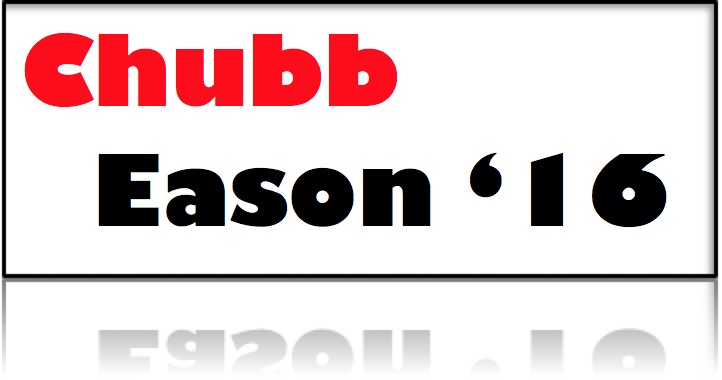

Chubb Eason '16
Make Georgia Football Great Again!

Are you a fan of UGA football? Are you tired of the incessant heartbreak? The ceaseless sense of defeat? Have no fear, Nick and Jacob are here! Introducing the newest and finest leaders in collegiate football - Nick Chubb and Jacob Eason. Bringing a much-needed influx of new energy to a dormant program, these two mavericks are ready to change the game and they want YOUR support! Browse our website to learn more about our favorite NCAA athletes and why we believe they deserve the unrelenting support of college football fans around the nation. Together, we can make Georgia Football great again!
"Strength does not come from physical capacity. It comes from an indomitable will within." -Nick Chubb
"It's easy when you're having fun." - Jacob Eason